OpenClaw を飛書に接続
OpenClaw（旧称 Clawdbot）は、オープンソースでローカルファーストのAIエージェントゲートウェイです。大規模モデルをあなたのコンピュータ/サーバー上で24時間365日稼働させることができ、コンピューターの直接操作、Webページの閲覧、コマンドの実行をサポートし、飛書、Telegram、Discordなどのチャットプラットフォームにシームレスに接続できます。
この章では、OpenClaw を飛書に接続し、メッセージ配信、画像送信、ファイル受信、承認インタラクション、データ同期などの自動化シナリオを実現します。
OpenClaw をまだインストールしていない場合は、先にインストールする必要があります：
npm コマンドでグローバルにインストール：
npm install -g openclaw@latest --registry=https://registry.npmmirror.com
または pnpm コマンドでインストール：
pnpm add -g openclaw@latest
OpenClaw のインストールは、以下を詳しく参照してください：OpenClaw (Clawdbot) チュートリアル。
飛書公式プラグインをインストール
新版の OpenClaw には組み込みサポートがあり、以下のコマンドで有効にできます：
openclaw plugins enable feishu
次に、以下のコマンドを使用できますopenclaw plugins listコマンドで有効かどうかを確認します。disabled無効を示し、loaded有効を示します：
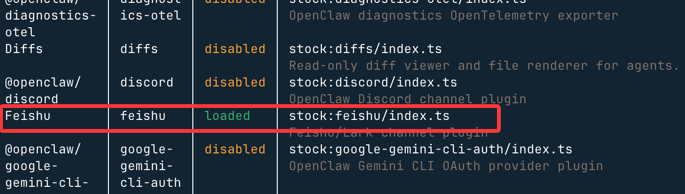
飛書オープンプラットフォームでボットを作成
飛書オープンプラットフォームを開くhttps://open.feishu.cn/app「企業内製アプリを作成」をクリック：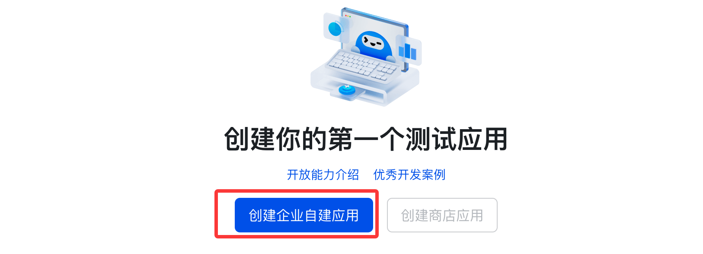
アプリ名を入力します（例：「我的 OpenClaw AI」）。説明とアイコンは任意です：
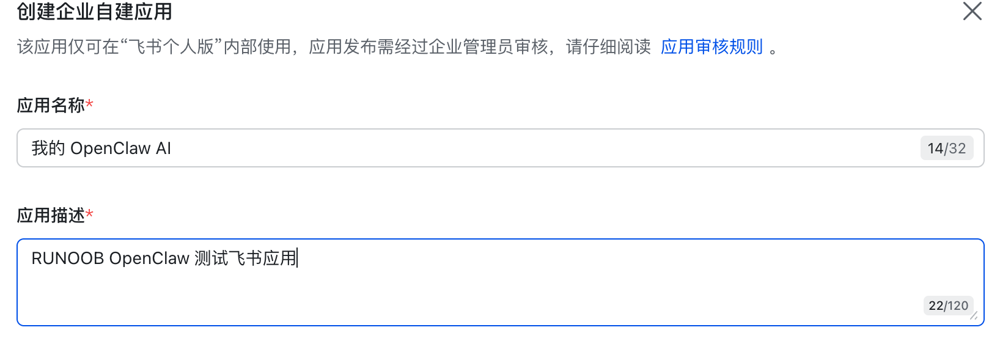
認証情報をコピーApp ID 和 App Secret（後で使用します）
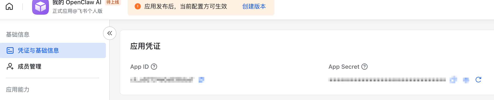
次にターミナルに戻り、以下のコマンドを入力してチャンネルを設定します：
openclaw channels add
「Feishu/Lark (飞书) (needs app creds)」を選択：
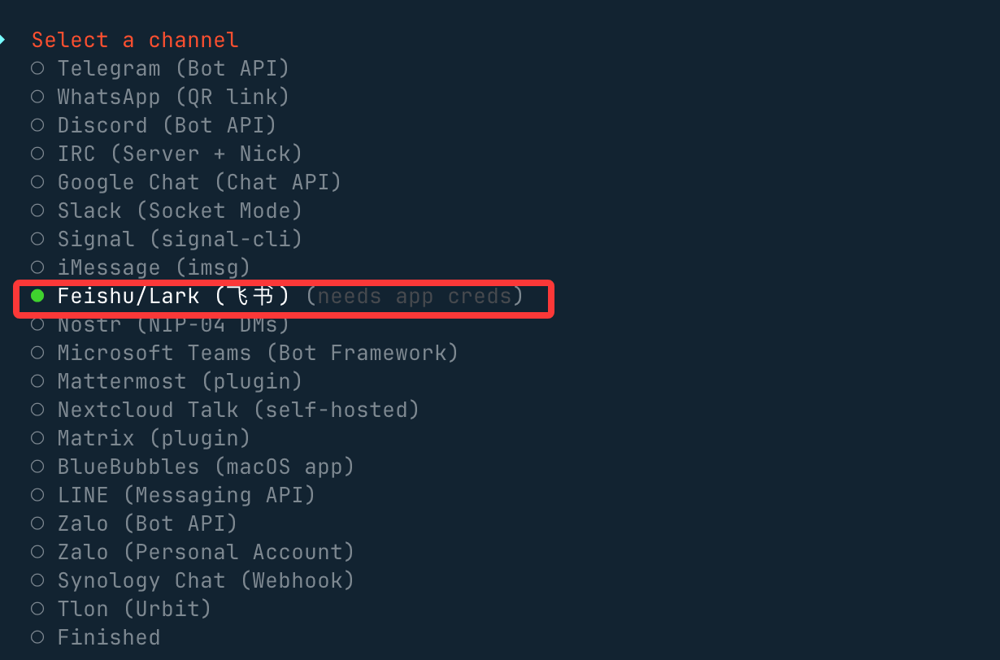
「Enter App Secret」を選択：
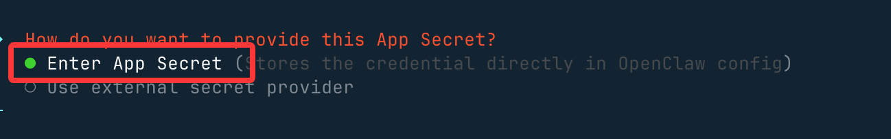
以前飛書で作成したアプリのApp Secret 和 App ID：
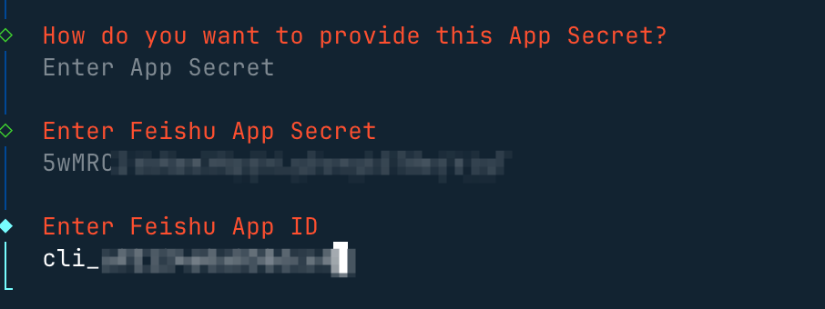
接続モードを設定し、国内ドメインを使用します：
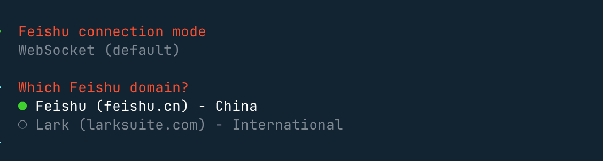
続いて、グループチャットポリシーで「Open」を選択します。これにより、すべてのグループチャットに応答できます：
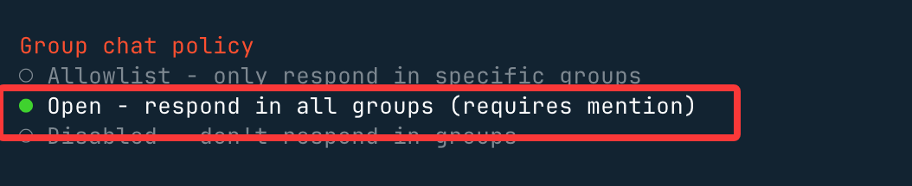
「Allowlist」を選択した場合は、ホワイトリストのグループチャットでのみ応答できます。
選択が完了したら、メニューに戻って選択しますFinishedその後、他はデフォルトのままEnterキーを押すだけで、これで飛書の設定が完了します。
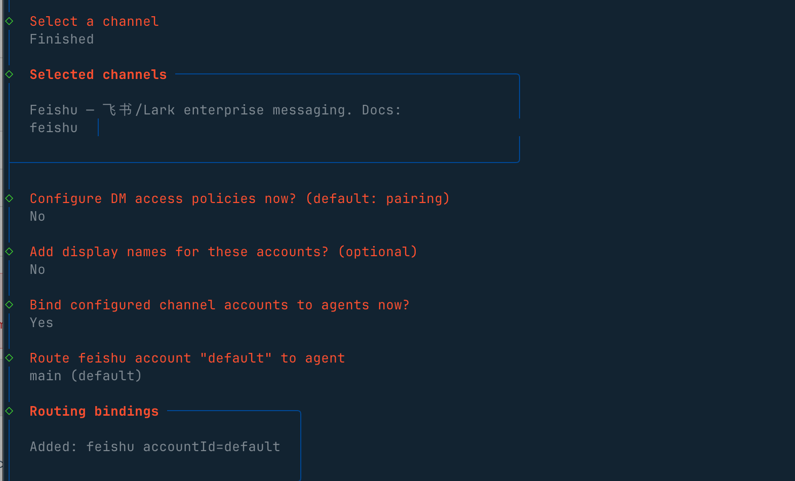
Web 管理画面に戻り、チャンネルオプションを確認すると、飛書が有効になっていることが確認できます：
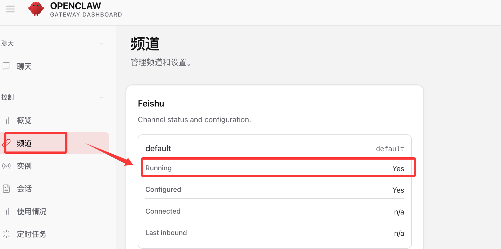
ボット機能を有効にする
次に、飛書で作成したアプリの画面に戻り、左側メニュー → アプリ機能の追加 → ボット の順に進み、「追加」ボタンをクリックして、ボット機能を有効にします：

権限を設定します。左側 → 権限管理 → 一括インポート/エクスポート権限 の順に進みます：
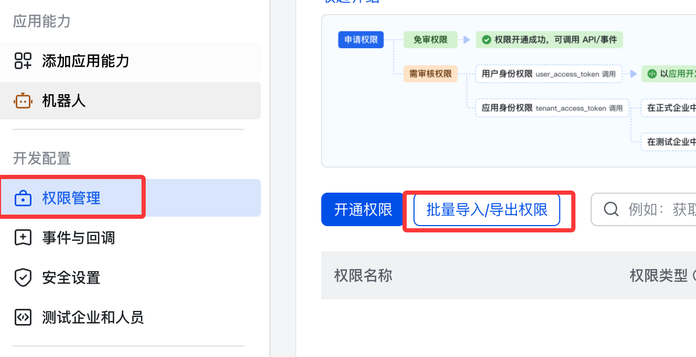
以下の JSON を貼り付けます：
{
"scopes": {
"tenant": [
"aily:file:read",
"aily:file:write",
"application:application.app_message_stats.overview:readonly",
"application:application:self_manage",
"application:bot.menu:write",
"cardkit:card:read",
"cardkit:card:write",
"contact:user.employee_id:readonly",
"corehr:file:download",
"event:ip_list",
"im:chat.access_event.bot_p2p_chat:read",
"im:chat.members:bot_access",
"im:message",
"im:message.group_at_msg:readonly",
"im:message.p2p_msg:readonly",
"im:message:readonly",
"im:message:send_as_bot",
"im:resource"
],
"user": ["aily:file:read", "aily:file:write", "im:chat.access_event.bot_p2p_chat:read"]
}
}

権限リスト：
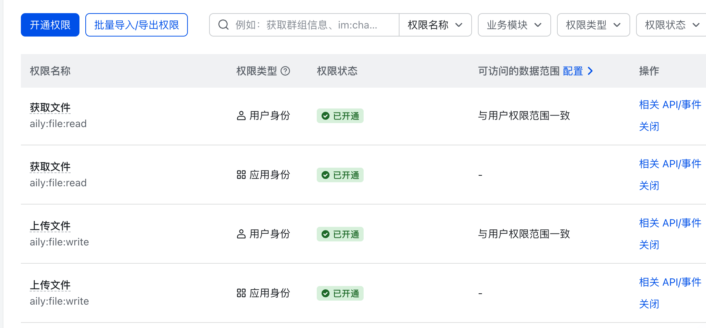
イベントサブスクリプションを設定
次に、アプリに関連イベントをサブスクライブする必要があります。左側メニューで「イベントとコールバック」→「イベント設定」を選択します：

サブスクリプション方法は、長期間接続（WebSocket）でイベントを受信する方式を使用し、保存します。
以下のイベントを追加します：
- im.message.receive_v1 - メッセージ受信
- im.message.message_read_v1 - メッセージ既読通知
- im.chat.member.bot.added_v1 - ボットがグループに追加される
- im.chat.member.bot.deleted_v1 - ボットがグループから削除される
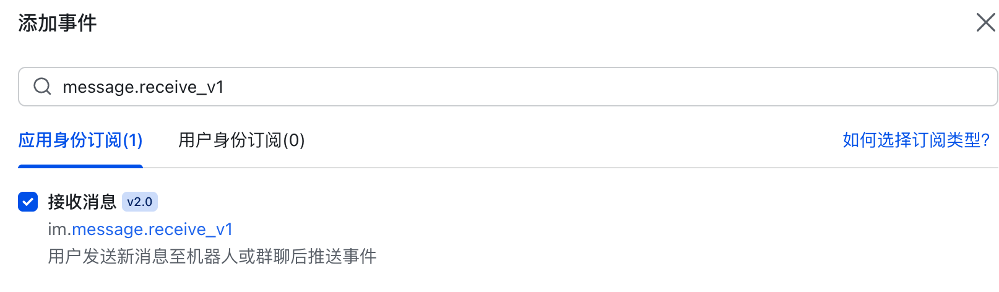
追加済みイベントリスト：

アプリを公開
左側 → バージョン管理と公開 → バージョン作成 → 審査提出 → 公開：

公開情報：
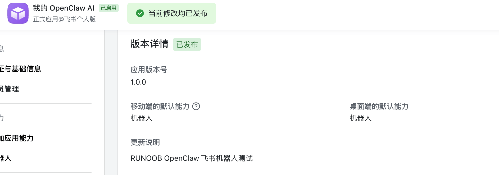
起動してテスト
openclaw を起動：
openclaw gateway 或 openclaw gateway --port 18789
飛書を使用してテストグループを作成：

グループの設定で、先ほど作成したボットを追加します：
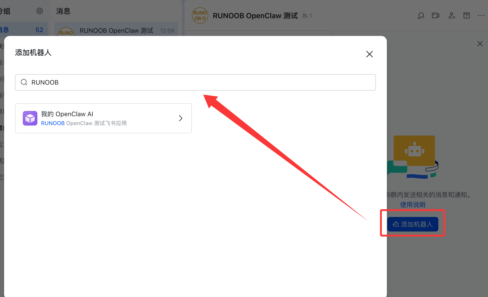
次に、OpenClaw とチャットを開始できます。@メンションで自己紹介をさせてみてください。正常に返信があれば、フローが成功したことになります：
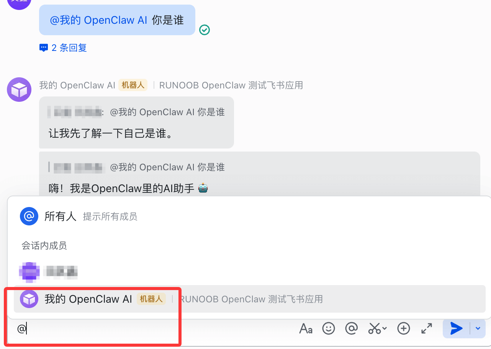
その他の拡張